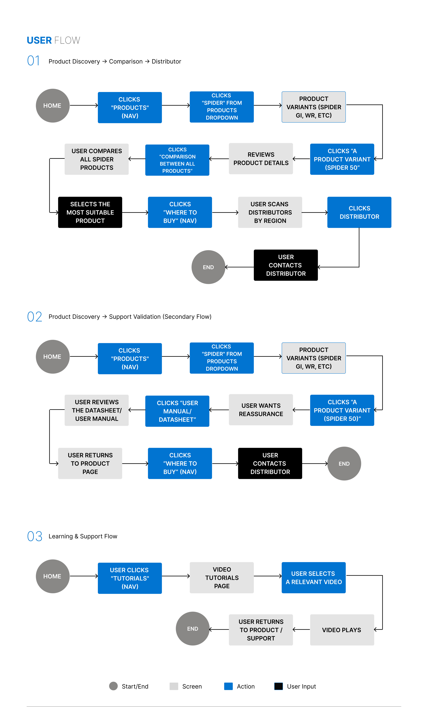
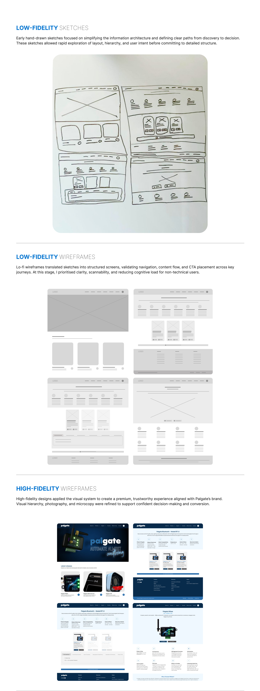
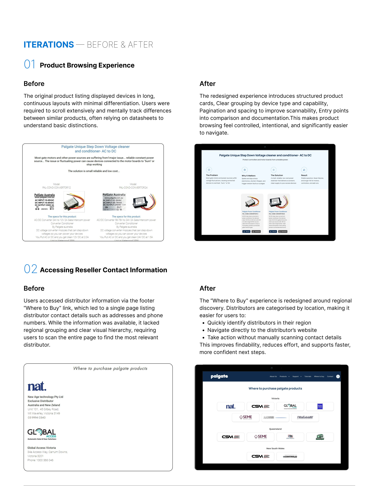

PalGate — Making access-control products easier to understand, compare, and choose.
01 / PROJECT OVERVIEW
A capable platform. A clearer experience.
PalGate is an Australian access-control technology platform that enables users to manage gates, doors, lighting, pumps, and automation through mobile and cloud-based control. The challenge was not a lack of capability, but a lack of clarity. The original website presented products as a flat catalogue, making it difficult for users to understand differences between devices, identify the right product for their use case, or confidently compare options.
This redesign focused on restructuring how products are organised, explained, and compared—while still supporting installers through tutorials and documentation.
Timeframe
6 weeks
My role
UX + UI Design · Visual design · Branding · User flow · Research · Prototyping + Testing
Tools
Figma · FigJam · Zoom · Google Forms · Photoshop · Illustrator
02 / THE CHALLENGE
Problem Statements
Product discovery lacked structure and decision clarity.
Similar-looking access-control devices had limited differentiation. Connectivity, relay capacity, scale, and compatibility were hidden within datasheets, making it difficult to identify a suitable device.
Support content distracted from purchase intent.
Tutorials and manuals appeared alongside product exploration, creating unnecessary cognitive load for first-time users trying to choose a device rather than configure it.
No comparison or decision support existed.
Users could not compare devices side by side. Use cases, compatibility, power requirements, and scalability were buried in documentation, increasing reliance on external support or distributors.
Key pain points
Unclear product differentiation: Similar-looking products made the right solution hard to identify.
Technical complexity: Technical details appeared before context, slowing understanding and decisions.
No clear decision path: Users lacked guidance to narrow options confidently.
No product comparison: Evaluating options required extra effort or support.
Competing support content: Tutorials interrupted product selection instead of supporting it.
03 / POTENTIAL SOLUTIONS
Make product choice clearer.
01
Clarify product structure and differentiation
Organise listings around capability and real-world use cases. Introduce consistent product cards, key-feature summaries, and comparison to help users evaluate options without relying on technical documents.
02
Prioritise product discovery
Keep products in the primary journey. Reposition tutorials as contextual, secondary resources available after a product has been selected or purchased.
03
Support confident comparison
Surface decision-critical information early, with a dedicated comparison experience that lets users assess devices across key criteria at a glance.
Design process
Empathize
Define
Ideate
Prototype
Test
Testing feeds back into definition and ideation, refining the structure and guidance throughout the design process.
04 / RESEARCH & INSIGHTS
Understand how people evaluate access control.
01
Usability evaluation
Evaluated the current PalGate website using usability principles to identify friction, clarity issues, and gaps in user guidance.
02
Information review
Reviewed how products, features, and technical information were organised to understand where users struggled to find, compare, or interpret details.
03
Competitor & audience analysis
Studied competitor websites and assessed installer and end-user mental models around selection, comparison, and decision-making.
Competitive Market Analysis
Competitors demonstrated that clear use-case framing and structured product categorisation help reduce decision friction, especially for installer-led products. Strong branding and documentation build trust, while overly technical presentation creates barriers for first-time users. The opportunity was to balance visual clarity, guided comparison, and accessible explanations.
Strong visual presentation of gate types and systems
Weaknesses
Limited explanation of differences between controllers
Technical details often require external documentation
Learning
Visual clarity matters, but needs supporting guidance. Product imagery alone is not enough for comparison.
Strengths
Strong brand authority and trust
Detailed technical documentation
Clear separation between residential and industrial systems
Weaknesses
Overly technical for first-time buyers
Comparison requires deep reading across multiple pages
Learning
Authority builds trust, but clarity drives conversion. Comparison tools can bridge technical depth and usability.
Key takeaways
Product clarity is the foundation of trust.
Users need help choosing before they need help installing.
Comparison tools reduce friction and support confident decisions.
Organising products by intent is more effective than by SKU.
User Interviews
Insights were informed by understanding how homeowners, installers, and commercial users evaluate access-control products, particularly how they compare options, assess compatibility, and decide when to contact support or distributors.
Detached home owner — Essendon, Melbourne
Property manager for multi-unit housing — South Yarra, Melbourne
Commercial site operator — Dandenong South, Melbourne
Gate automation installer servicing Preston, Coburg, and Reservoir
Key questions
How do users decide between similar access-control devices?
What information is required before contacting a distributor?
When do users expect to compare products side by side?
How much technical detail is enough at each stage?
Do users prefer grouping by use case, capability, or environment?
What signals give confidence that a solution can scale?
When do users want reassurance through local support or distributors?
What causes users to abandon exploration and seek external help?
Organised and detail-focused, Emily is comfortable with digital tools but not technical hardware. She manages secure access for residents and guests, values reliability and local support, and wants a system that scales as her properties grow.
Goals
Select a controller suitable for shared residential access.
Understand support for multiple users and remote control.
Ensure gate compatibility and future expansion.
Reduce dependency on installers for everyday access changes.
Frustrations
Similar-looking devices with unclear differences.
Difficulty understanding limits around users, sites, and integrations.
Interpreting datasheets before knowing whether a device is relevant.
Uncertainty about future scalability.
Needs
Clear residential and multi-user groupings, simple explanations of 4G and Bluetooth connectivity, confidence in long-term suitability, and visible local distributor support.
Practical and efficiency-driven, Daniel installs and configures access-control systems across Melbourne. He values speed, technical accuracy, and consistent products that help avoid installation errors and customer callbacks.
Goals
Identify the correct Spider variant for each installation.
Confirm relay count, connectivity, and integration compatibility upfront.
Reduce installation time and customer confusion.
Standardise solutions across different job types.
Frustrations
Switching between product pages and datasheets.
Customers selecting underpowered or incorrect devices.
No quick comparison between controller models.
Missing information that causes onsite troubleshooting.
Needs
Comparison tables across Spider models, immediate access to manuals and wiring diagrams, clear product limitations, and fast validation against site requirements.
06 / PROJECT GOALS
Clarity for users. Room to grow.
Before exploring solutions, I mapped out business goals, user goals, and technical considerations.
Business goals
Improve product conversion clarity.
Reduce pre-sales support dependency.
Strengthen PalGate’s position as a scalable platform.
User goals
Choose the right product with confidence.
Understand differences at a glance.
Access support when needed, rather than by default.
Technical considerations
Support a growing product range.
Maintain scalable comparison logic.
Ensure consistency across devices and content.
07 / USER FLOWS
A clear route from discovery to action.
Product Discovery → Comparison → Distributor
Visitors explore Spider variants, review a device, compare products, select a suitable option, and use “Where to Buy” to find a distributor by region.

Product discovery, comparison, and distributor flow.
Product Discovery → Support Validation
When reassurance is needed, users open a product’s manual or datasheet, return to the product page, and continue to a distributor.
Support validation within the product-selection journey.
Learning & Support
Users seeking setup help go directly to Tutorials, select a relevant video, and return to product or support content afterwards.
Learning and support flow.
08 / VISUAL DESIGN
From sketches to a clear product experience.
Low-Fidelity Sketches
Early hand-drawn sketches focused on simplifying the information architecture and defining clear paths from discovery to decision. They allowed rapid exploration of layout, hierarchy, and user intent before committing to detailed structure.

Early layout sketches.
Low-Fidelity Wireframes
Lo-fi wireframes translated sketches into structured screens, validating navigation, content flow, and CTA placement. I prioritised clarity, scannability, and reduced cognitive load for non-technical users.
Low-fidelity interface wireframes.
High-Fidelity Wireframes
High-fidelity designs applied the visual system to create a premium, trustworthy experience aligned with Palgate’s brand. Visual hierarchy, photography, and microcopy were refined to support confident decisions and conversion.
High-fidelity website designs.
09 / ITERATIONS
Before & After
Product Browsing Experience
Before
Long, continuous layouts offered minimal differentiation. Users scrolled extensively and mentally tracked differences, often relying on datasheets to understand basic distinctions.

After
Structured cards, clear capability groupings, pagination, and spacing improve scannability. Entry points into comparison and documentation make browsing feel more controlled and easier to navigate.
Accessing Distributor Information
Before
A footer “Where to Buy” link led to a single list of distributor addresses and phone numbers. Without regional grouping or clear hierarchy, users had to scan the whole page.
After
The redesigned “Where to Buy” experience groups distributors by location. Users can quickly find a relevant region and navigate directly to a distributor’s website.
10 / RESULTS
Clearer choices. More confident next steps.
The supplied case study reports the following usability testing results.
100%
Task Completion
All participants browsed products, understood differences, and progressed towards a purchase or enquiry without confusion.
100%
Distributor Discovery
Users located and contacted regional distributors directly from the website without external searching.
100%
Product Confidence
Users reported confidence in identifying the correct device for their environment without opening multiple datasheets or comparing products manually.
Final Experience
The redesigned PalGate website delivers a structured, product-led experience that prioritises clarity and confidence. Users can understand what PalGate offers, how products differ, and which device suits their needs before being introduced to deeper technical detail or tutorials.
Reorganised listings, comparison logic, and embedded distributor access support first-time users and experienced installers without overwhelming either group.
Reflections
Clear product hierarchy reduces decision fatigue.
Comparison and categorisation are more valuable than simply adding content.
Technical credibility can be maintained without leading with complexity.
Small structural and navigation changes can remove major friction points.
Australian use cases, including remote sites, installers, and solar setups, are essential to trust.
Future Impact
Smarter product selection: Evolve towards intelligent recommendations informed by real-world usage.
A stronger installer and distributor ecosystem: Reduce incorrect purchases, installation errors, and support dependency.
Education-driven trust: Introduce concepts gradually so the platform remains reliable and understandable.
Scalable platform design: Support new devices, integrations, and regional expansion through modular product and comparison structures.
Future Enhancements
A full comparison table for side-by-side evaluation of PalGate devices.
Short explainer videos embedded in product listings.
A dedicated installer portal with trade pricing, documentation, and training.
Advanced filtering by environment, scale, and integration compatibility.
Thank you for your time.
A clearer product journey that helps customers choose with confidence and gives installers technical depth when they need it.